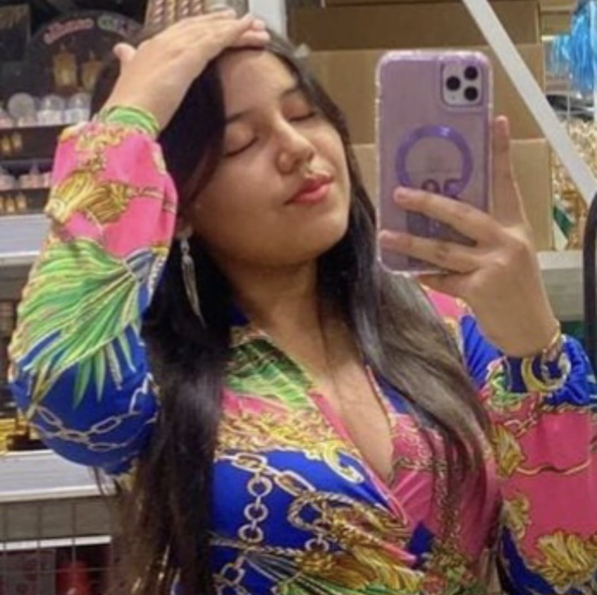
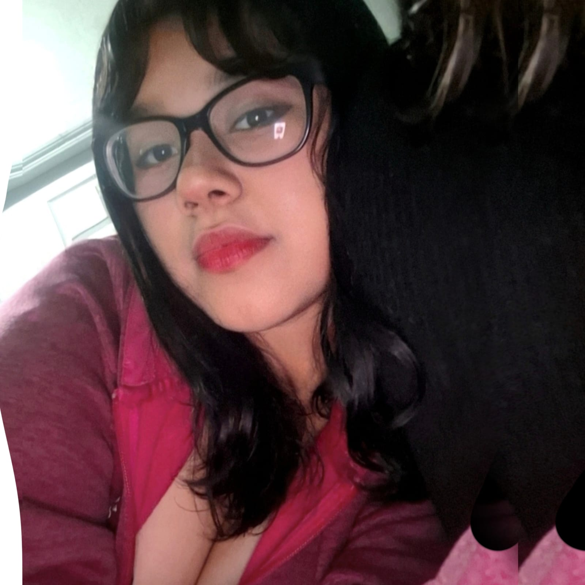

Astrid Abigail Aguilera Ramos
Nacida el 20 Diciembre 2008
Tengo 17 años
Vivo en Col. Brisa del Carmen #2
- Ver Partidos
- Escuchar Música
- Tomar fotográfias
- Ver películas/series
| Mis Metas |
|---|
| Graduarme |
| Tener mi propia casa |
| Tener mi carro y pues una moto |
| Darles lo mejor a mis padres |
| Tener mi propio emprendimiento |
| Ser mejor persona |
| Tener un buen estatus económico para ayudar |
| Tener salud siempre |

Claudia Maria Cruz Reyes
Nacida el 27 de junio de 2009
Tengo 16 años
Vivo en Col. Satelite
- Pintar y dibujar
- Viajar y caminar
- Decorar
- Comprar cosas
| Mis Metas |
|---|
| Ser alguien exitosa |
| Culminar mis estudios |
| Ayudar a mis padres y familia |
| Tener una familia |
| Superarme cada día como persona |
| Mejorar al expresar sentimientos en el arte |
| Terminar de ver mis kdramas pendientes |
| Tener mis cosas propias |